Lattice Boltzmann Methods
Ou : comment j'ai appris à ne plus m'en faire et à aimer le Fortran
Mécanique des fluides
Navier-Stokes
\[
\begin{align*}
\frac{\partial \vec{u}}{\partial t} + (\vec{u} \cdot \vec{\nabla})\vec{u} &= - \dfrac{\vec{\nabla} P}{\rho} + \nu \Delta \vec{u} + \dfrac{\vec{F}_\text{ext}}{\rho}\\
\vec{\nabla} \cdot \vec{u} &= 0
\end{align*}
\]
Navier-Stokes
\[
\begin{align*}
\frac{\partial \vec{u}}{\partial t} + (\vec{u} \cdot \vec{\nabla})\vec{u} &= - \dfrac{\vec{\nabla} P}{\rho} + \nu \Delta \vec{u} + \dfrac{\vec{F}_\text{ext}}{\rho}\\
\vec{\nabla} \cdot \vec{u} &= 0
\end{align*}
\]
- Vitesse macroscopique $\vec{u}$
- Viscosité cinématique $\nu$
- Pression $P$
- Masse volumique $\rho$
Équation de Boltzman
\[
\frac{\partial f}{\partial t} + \vec{v} \cdot \vec{\nabla}_{\vec{r}} f + \frac{\vec{F}_\text{ext}}{\rho} \cdot \vec{\nabla}_{\vec{v}} f = C(f)
\]
Équation de Boltzman
\[
\frac{\partial f}{\partial t} + \vec{v} \cdot \vec{\nabla}_{\vec{r}} f + \frac{\vec{F}_\text{ext}}{\rho} \cdot \vec{\nabla}_{\vec{v}} f = C(f)
\]
- Distributions des particules $f(\vec{r},\vec{v},t)$
- Vitesses des particules $\vec{v}$
- Opérateur collision $C(f)$
Équation de Boltzman
\[
\frac{\partial f}{\partial t} + \vec{v} \cdot \vec{\nabla}_{\vec{r}} f + \frac{\vec{F}_\text{ext}}{\rho} \cdot \vec{\nabla}_{\vec{v}} f = C(f)
\]
- Distributions des particules $f(\vec{r},\vec{v},t)$
- Vitesses des particules $\vec{v}$
- Opérateur collision $C(f)$
Opérateur BGK :
$$C(f) := - \frac{1}{\tau} (f - f^{\text{eq}})$$Discrétisation
Navier-Sokes
- discrétisation du temps
- discrétisation de l'espace
→
Boltzman
- discrétisation du temps
- discrétisation de l'espace des phase
Shéma D2Q9
Écoulement de poiseuille
Écoulement de poiseuille
Écoulement de poiseuille
Écoulement en géométrie complexe
Allée de tourbillons de von Karman
Allée de tourbillons de von Karman & écoulement turbulent
Merci de votre attention
Algorithme & implémentation
Initialisation des variables & discrétisation de l'espace
! Author : Pacidus
! Started at: 31.10.2020 00:17:57
!===============================================================================
! Fluid Constants.
!===============================================================================
Module Fconst
Implicit None
Real(8), Parameter :: cs = 3.4d2 ! m·s⁻¹ Speed of sound
Real(8), Parameter :: rho = 1.177d0 ! kg·m⁻³ Fluid density
Real(8), Parameter :: nu = .1 ! m²·s⁻¹ Kinematic viscosity
End Module Fconst
!===============================================================================
! Simulation Constants.
!===============================================================================
Module Sconst
Implicit None
Real(8), Parameter :: lx = 4d0 ! m Length of the box
Real(8), Parameter :: ly = 2d0 ! m Height of the box
Real(8), Parameter :: t = 5d0 ! s Total time of the simulation
Real(8), Parameter :: sp = 10d0 ! m·s⁻¹ Inlet Speed
End Module Sconst
!===============================================================================
! Discretisation Constants.
!===============================================================================
Module Dconst
Use Fconst, Only: cs
Use Sconst, Only: lx, ly, t
Implicit None
Real(8), Parameter :: dt = 25d-6!5 ! s Timestep
Real(8), Parameter :: dl = cs*dt ! m Spatial step
Integer(4), Parameter :: H = Int(ly/dl) ! ø Number of height-step
Integer(4), Parameter :: L = Int(lx/dl) ! ø Number of length-step
Integer(4), Parameter :: N = Int(t/dt) ! ø Number of timestep
End Module Dconst
!===============================================================================
! Computationnal Constants.
!===============================================================================
Module Cconst
Use Fconst, Only: cs, nu
Use Dconst, Only: dt
Use Sconst, Only: sp
Implicit None
Real(8), Parameter :: sqrt3 = Dsqrt(3d0) ! ø No reason except aesthetic
Real(8), Parameter :: c = cs*sqrt3 ! m·s⁻¹ Lattice speed
Real(8), Parameter :: cs2 = cs*cs ! m²·s⁻² Sound speed squared
Real(8), Parameter :: ics2 = 1d0/cs2 ! s²·m⁻² Inverse of cs2
Real(8), Parameter :: clean = nu*ics2/dt ! ø No reason except aesthetic
Real(8), Parameter :: tau = clean+5d-1 ! ø Characteristic timescale
Real(8), Parameter :: itau = 1d0/tau ! ø Inverse of tau
Real(8), Parameter :: mitau = 1d0-itau ! ø One minus inverse of tau
Real(8), Parameter :: zh = cs/(cs-sp) ! ø Zou/He parameter
Real(8), Parameter :: sp2 = sp*sp ! m²·s⁻² Outlet speed squared
End Module Cconst
!===============================================================================
! Lattice Constants.
!===============================================================================
Module Lconst
Use Cconst, Only: c
Implicit None
Integer(1), Parameter :: D = 2 ! D2 Number of spatial dimension
Integer(1), Parameter :: Q = 9 ! Q9 Number of speed discretization
Integer(1), Parameter :: ed(Q,D) = & ! ø Directions of the speeds
reshape(&
(/0, 1, 0, -1, 0, 1, -1, -1, 1,&
0, 0, 1, 0, -1, 1, 1, -1, -1/),&
(/Q,D/))
Real(8), Parameter :: e(Q,D) = c*dble(ed) ! m·s⁻¹ Speeds vectors
Real(8), Parameter :: w(Q) = & ! ø D2Q9 Weights
(/4d0, 1d0, 1d0, 1d0, 1d0, 1d0/4d0,&
1d0/4d0, 1d0/4d0, 1d0/4d0/)/9d0
End Module Lconst
!===============================================================================
! Simulation Variables.
!===============================================================================
Module Var
Implicit None
Integer(4), Allocatable :: Obj(:, :) ! ø coordinate of the Object
Real(8), Allocatable :: Feq(:,:,:) ! kg·m⁻³ Density speed distribution
Real(8), Allocatable :: Usqr(:,:) ! m·s⁻¹ Macroscopic speed squared
Real(8), Allocatable :: F(:,:,:) ! kg·m⁻³ Density speed distribution
Real(8), Allocatable :: U(:,:,:) ! m·s⁻¹ Macroscopic speed
Real(8), Allocatable :: Rho(:,:) ! kg·m⁻³ Macroscopic density
Integer(4) :: s ! ø Number of element in Obj
End Module Var
Inlet & Outlet
!===============================================================================
! Inlet & Outlet
! Using Zou/He boundary condition to implement Dirichlet
!===============================================================================
Subroutine IOlet
Use Cconst, Only: cs, ics2, zh, sp2
Use Lconst, Only: Q, e, w
Use Var, Only: F, Rho, U
Use Dconst, Only: L, H
Use Sconst, Only: sp
Implicit None
Real(8) :: sca, Feq1, Feq2, R
Integer(4) :: j!, i
! Outflow condition
! Top & Bottom wall
! Do i = 1, L
! F(7,i,1) = F(7,i,2)
! F(3,i,1) = F(3,i,2)
! F(6,i,1) = F(6,i,2)
! F(8,i,H) = F(8,i,H-1)
! F(5,i,H) = F(5,i,H-1)
! F(9,i,H) = F(9,i,H-1)
! End Do
! Right wall
Do j = 1, H
F(7,L,j) = F(7,L-1,j)
F(4,L,j) = F(4,L-1,j)
F(8,L,j) = F(8,L-1,j)
End Do
! Inflow condition Left wall
Do j = 1, H
U(1,1,j) = sp
U(2,1,j) = 0d0
sca = (F(4,1,j)+F(1,1,j)+F(2,1,j)+2*(F(7,1,j)+F(4,1,j)+F(8,1,j)))
r = sca*zh
Rho(1,j) = r
sca = e(8,1)*sp
Feq1 = w(8)*(1d0+(sca+.5d0*((sca*sca*ics2)-sp2))*ics2)
sca = e(6,1)*sp
Feq2 = w(6)*(1d0+(sca+.5d0*((sca*sca*ics2)-sp2))*ics2)
F(6,1,j) = F(8,1,j) + r*(Feq2 - Feq1)
sca = e(4,1)*sp
Feq1 = w(4)*(1d0+(sca+.5d0*((sca*sca*ics2)-sp2))*ics2)
sca = e(2,1)*sp
Feq2 = w(2)*(1d0+(sca+.5d0*((sca*sca*ics2)-sp2))*ics2)
F(2,1,j) = F(4,1,j) + r*(Feq2 - Feq1)
sca = e(7,1)*sp
Feq1 = w(7)*(1d0+(sca+.5d0*((sca*sca*ics2)-sp2))*ics2)
sca = e(9,1)*sp
Feq2 = w(9)*(1d0+(sca+.5d0*((sca*sca*ics2)-sp2))*ics2)
F(9,1,j) = F(7,1,j) + r*(Feq2 - Feq1)
End Do
End Subroutine
Collisions avec les objets
!===============================================================================
! Boundary with collision
!===============================================================================
Subroutine Bound
Use Dconst, Only: L, H
Use Var, Only: F, Obj, s
Implicit None
Integer(4) :: n, i, j
Real(8) :: fi
Do n = 1, s
i = Obj(1,n)
j = Obj(2,n)
fi = F(2,i,j)
F(2,i,j) = F(4,i,j)
F(4,i,j) = fi
fi = F(6,i,j)
F(6,i,j) = F(8,i,j)
F(8,i,j) = fi
fi = F(3,i,j)
F(3,i,j) = F(5,i,j)
F(5,i,j) = fi
fi = F(7,i,j)
F(7,i,j) = F(9,i,j)
F(9,i,j) = fi
End Do
End Subroutine
grandeurs macroscopiques
!===============================================================================
! Compute Macro
!===============================================================================
Subroutine CMacro
Use Var, Only: F, Rho, U, Usqr
Use Dconst, Only: L, H
Use Lconst, Only: Q, e
Implicit None
Integer(4) :: i, j
Integer(1) :: k
Real(8) :: r
Do j = 1, H
Do i = 1, L
Rho(i,j) = 0
U(1,i,j) = 0
U(2,i,j) = 0
Do k = 1, Q
Rho(i,j) = Rho(i,j) + F(k,i,j)
If(e(k,1) /= 0) Then
U(1,i,j) = U(1,i,j) + F(k,i,j)*e(k,1)
End If
If(e(k,2) /= 0) Then
U(2,i,j) = U(2,i,j) + F(k,i,j)*e(k,2)
End If
End Do
r = 1d0/Rho(i,j)
U(1,i,j) = U(1,i,j)*r
U(2,i,j) = U(2,i,j)*r
Usqr(i,j) = U(1,i,j) * U(1,i,j) + U(2,i,j) * U(2,i,j)
End Do
End Do
End Subroutine
$\rho = \sum_{i=1}^9 f_i ~~~$
$\rho\vec{u} = \sum_{i=1}^9 f_i \cdot \vec{e}_i$
calcul de $f^{\text{eq}}$
!===============================================================================
! Compute Feq
!===============================================================================
Subroutine CFeq
Use Var, Only: Feq, U, Usqr, Rho
Use Lconst, Only: Q, e, w
Use Dconst, Only: L, H
Use Cconst, Only: ics2
Implicit None
Real(8) :: Ue
Integer(4) :: i, j
Integer(1) :: k
Do j = 1, H
Do i = 1, L
Feq(1,i,j) = w(1)*Rho(i,j)*(1d0-(.5d0*Usqr(i,j)*ics2))
End Do
End Do
Do j = 1, H
Do i = 1, L
Do k = 2, Q
Ue = e(k,1)*U(1,i,j)+e(k,2)*U(2,i,j)
Feq(k,i,j) = w(k)*Rho(i,j)*(1d0+(Ue+.5d0*((Ue*Ue*ics2)-Usqr(i,j)))*ics2)
End Do
End Do
End Do
End Subroutine
$$f^{\text{eq}}_i = w_i \rho\left(1 + \frac{\vec{u}\cdot{}\vec{e}_i}{c_s^2} + \frac{(\vec{u}\cdot{}\vec{e}_i)^2}{2c_s^4} - \frac{\vec{u}\cdot{}\vec{u}}{2c_s^2}\right)$$
Opérateur collision
!===============================================================================
! Collide Step
!===============================================================================
Subroutine Collide
Use Var, Only: F, Feq
Use Cconst, Only: itau, mitau
Use Dconst, Only: L, H
Use Lconst, Only: Q
Implicit None
Integer(4) :: i, j
Integer(1) :: k
Do j = 1, H
Do i = 1, L
Do k = 1, Q
F(k,i,j)= mitau*F(k,i,j) + itau*Feq(k,i,j)
End Do
End Do
End Do
End Subroutine
$$f_i = \left(1 - \dfrac{1}{\tau}\right) \cdot f_i + \dfrac{1}{\tau} \cdot f^{\text{eq}}_i$$
Diffusion
!===============================================================================
! Stream Step
!===============================================================================
Subroutine Stream
Use Lconst, Only: Q, ed
Use Dconst, Only: L, H
Use Var, Only: F
Implicit None
Integer(1) :: k, e
Integer(4) :: i, j
Real(8) :: fs
Do k = 2, Q
If (ed(k,1) /= 0) Then
e = (ed(k,1)+1)*5d-1
Do j = 1, H
fs = F(k,1+e*(L-1),j)
Do i = 2+e*(L-3), L-e*(L-1), -ed(k,1)
F(k,i,j) = F(k,i-ed(k,1),j)
End Do
F(k,L-e*(L-1),j) = fs
End Do
End If
If (ed(k,2) /= 0) Then
e = (ed(k,2)+1)*5d-1
Do i = 1, L
fs = F(k,i,1+e*(H-1))
Do j = 2+e*(H-3), H-e*(H-1), -ed(k,2)
F(k,i,j) = F(k,i,j-ed(k,2))
End Do
F(k,i,H-e*(H-1)) = fs
End Do
End If
End Do
End Subroutine
$$f_i(t+\delta_t, \vec{r}+\delta_t\vec{e}_i) = f_i(t, \vec{r})$$
Création du profil
!===============================================================================
! Convert the image of the object from svg to pgm
! and import it into a matrix with 1 and 0 (1 stand for the object)
!===============================================================================
Subroutine Object
Use Dconst, Only: L, H
Use Var, Only: Obj, s
Implicit None
Character(len=210) :: command ! The bash command
Integer(1) :: Ob(L,H)
Integer(4) :: i, j ! Itterator
command = '("rsvg-convert -w ",i0," -h ",i0," objet.svg -o objet.png")'
Write(command, command) L, H
Call execute_command_line(command, wait=.true.)
command = "convert -compress none objet.png -alpha extract -threshold 0%&
& -negate objet.pbm"
Call execute_command_line(command, wait=.true.)
Open(10, file = 'objet.pbm', action='read')
Read(10, *) command
Read(10, *) command
Do i=1, H
Read(10, *) Ob(:, i)
End Do
Close(10)
s = 0
Do j=1, H
Do i=1, l
s = s + Ob(i, j)
End Do
End Do
Allocate(Obj(2,s))
s = 0
Do j=1, H
Do i=1, l
If (Ob(i, j) == 1) Then
s = s + 1
Obj(1,s) = i
Obj(2,s) = j
End If
End Do
End Do
End Subroutine
Convertie une image en SVG vers PGM et lis la valeurs des pixels.